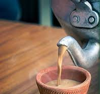

How to make chai: a brief recipe
Back home

Description
This is a brief recipe on how you can make traditional Indian chai.
Although there are many types of chai, I'll be sharing the chai typically made in South India with you guys.
Ingredients:
- Water
- Milk
- Tea Powder
- Sugar
- Pour half a glass of milk onto a saucepan.
- Add half a glass of hot water to the saucepan.
- Drop in 2-3 teaspoons of tea powder.
- Add sugar to your liking.
- Wait until the milk boils.
- Turn off the flames and pour the chai onto a glass.
There you go! This is how you make chai.